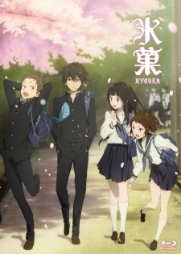

Di sini saya akan memberikan beberapa rekomendasi anime yang bagi saya adalah anime yang layak di tonton
NAMA
NIM
KELAS
MARUTO NUGROHO
2305176019
PENDIKOM A
1. Hyouka

Houtarou Oreki adalah siswa SMA yang menjalani hidup dengan prinsip hemat energi—tidak melakukan hal yang tidak perlu. Namun, semuanya berubah ketika ia dipaksa bergabung dengan Klub Sastra Klasik oleh kakaknya.
Di klub ini, ia bertemu Eru Chitanda, seorang gadis penuh rasa ingin tahu yang selalu tertarik pada misteri, serta dua temannya, Satoshi Fukube dan Mayaka Ibara. Bersama-sama, mereka menyelidiki berbagai teka-teki di sekolah mereka, termasuk rahasia tersembunyi di balik antologi lama klub mereka yang berjudul Hyouka.
Seiring waktu, Oreki yang awalnya enggan mulai menggunakan kecerdasannya untuk memecahkan misteri, sementara hubungan antaranggota klub berkembang secara mendalam. Dengan atmosfer tenang dan penuh teka-teki, Hyouka mengajak penonton menyelami kisah penuh intrik di balik kejadian sehari-hari.
2. Shigatsu wa Kimi no Uso
Arima Kousei adalah seorang pianis jenius yang kehilangan kemampuannya untuk mendengar suara piano setelah kematian ibunya. Sejak saat itu, dunianya terasa monoton dan tanpa warna, hingga suatu hari ia bertemu dengan Miyazono Kaori, seorang pemain biola yang penuh semangat dan kebebasan.
Kaori mengajarkan Kousei cara menikmati musik tanpa terikat oleh aturan, membantunya keluar dari bayang-bayang masa lalunya. Namun, di balik keceriaannya, Kaori menyimpan rahasia yang akan mengubah hidup Kousei selamanya.
Dengan animasi indah dan alunan musik klasik yang menyentuh hati, Shigatsu wa Kimi no Uso adalah kisah tentang cinta, kehilangan, dan bagaimana musik dapat menyembuhkan luka terdalam seseorang.
3. Isekai Nonbiri Nouka
Hiraku Machio meninggal karena sakit di dunia lamanya, tetapi diberi kesempatan kedua oleh dewa untuk hidup kembali di dunia lain. Sebagai kompensasi atas kehidupan sebelumnya yang penuh penderitaan, ia diberikan tubuh yang sehat, keterampilan bertani luar biasa, dan sebuah alat serbaguna bernama "Holy Farming Tool" yang bisa berubah sesuai kebutuhannya.
Dengan semua keuntungan ini, Hiraku memutuskan untuk menjalani kehidupan yang damai sebagai petani di dunia baru. Ia mulai membangun desa di hutan terpencil, menarik berbagai makhluk unik seperti elf, beastmen, dan bahkan naga untuk bergabung dengannya.
Seiring waktu, desanya berkembang pesat, menjadi tempat yang makmur dan harmonis. Isekai Nonbiri Nouka menyajikan kisah santai tentang kehidupan bertani di dunia fantasi, penuh dengan momen komedi, persahabatan, dan sedikit romansa. Cocok bagi penonton yang menyukai isekai dengan nuansa ringan dan menenangkan.
4. Yuru Camp△
Shima Rin adalah seorang gadis yang menikmati kesendirian dan sering berkemah sendirian di berbagai tempat indah di Jepang, terutama di sekitar Gunung Fuji. Suatu hari, saat sedang berkemah, ia bertemu dengan Nadeshiko Kagamihara, seorang gadis ceria yang tersesat setelah mencoba melihat Gunung Fuji dari dekat.
Pertemuan ini menjadi awal dari petualangan mereka bersama dalam dunia perkemahan. Nadeshiko, yang awalnya tidak tahu banyak tentang berkemah, mulai tertarik dan bergabung dengan Klub Aktivitas Luar Ruang di sekolahnya. Bersama teman-temannya, mereka menjelajahi berbagai tempat berkemah, menikmati pemandangan indah, memasak makanan lezat di alam terbuka, dan menghabiskan waktu dengan cara yang santai dan menyenangkan.
Yuru Camp△ adalah anime yang penuh dengan suasana tenang, kehangatan persahabatan, dan pemandangan alam yang memukau. Cocok bagi penonton yang mencari tontonan ringan dan menenangkan, dengan sentuhan humor dan kehidupan sehari-hari di alam terbuka.
5. Kusuriya no Hitorigoto
Di sebuah kerajaan besar di Tiongkok kuno, Maomao adalah seorang apoteker muda yang hidup sederhana di distrik lampu merah. Namun, nasibnya berubah ketika ia diculik dan dijual sebagai pelayan di istana kekaisaran.
Meskipun awalnya berniat tetap rendah hati dan tidak menarik perhatian, kecerdasannya yang luar biasa dalam bidang racun dan obat-obatan segera menarik minat Jinshi, seorang pejabat istana berwajah tampan dan penuh misteri. Dengan bakat dan pengetahuannya, Maomao mulai mengungkap berbagai rahasia di dalam istana, mulai dari konspirasi beracun hingga intrik politik yang melibatkan para selir dan pejabat tinggi.
Meskipun ia selalu berusaha menjauh dari masalah, rasa ingin tahunya yang besar membawanya semakin dalam ke dunia yang penuh bahaya. Kusuriya no Hitorigoto adalah anime yang memadukan misteri, drama, dan sejarah, dengan protagonis cerdas yang penuh sarkasme. Dengan alur cerita yang penuh teka-teki dan intrik, anime ini menawarkan pengalaman menegangkan sekaligus menghibur bagi para penonton.
6. Sousou no Frieren
Setelah mengalahkan Raja Iblis, Frieren, seorang elf penyihir yang berumur panjang, kembali dari petualangannya bersama pahlawan manusia Himmel, pendeta Heiter, dan prajurit dwarf Eisen. Mereka telah menyelamatkan dunia dan seharusnya menikmati kedamaian, tetapi bagi Frieren, waktu berjalan berbeda. Sebagai elf yang bisa hidup selama ribuan tahun, perpisahan dengan teman-temannya terasa seperti sekejap mata.
Beberapa dekade kemudian, ketika Himmel meninggal karena usia tua, Frieren mulai menyadari arti dari waktu yang ia habiskan bersama mereka. Dengan perasaan bersalah karena tidak benar-benar memahami manusia dan nilai kebersamaan, ia memulai perjalanan baru untuk mengenang masa lalu dan menemukan makna hubungan antarmanusia. Dalam perjalanannya, ia bertemu generasi baru petualang, termasuk seorang penyihir muda bernama Fern dan seorang pejuang bernama Stark, yang membantunya memahami dunia dengan cara yang berbeda.
Sousou no Frieren adalah anime yang menyentuh hati, menggambarkan perjalanan seorang elf dalam memahami makna kehidupan, waktu, dan kenangan. Dengan nuansa fantasi yang tenang dan penuh emosi, anime ini menawarkan kisah yang mendalam tentang perpisahan dan bagaimana seseorang bisa belajar untuk menghargai setiap momen yang dimiliki.
TRAILER
Saran Movie Anime
1. Kimi no Na wa
Taki dan Mitsuha adalah dua remaja dari latar belakang berbeda yang secara misterius bertukar tubuh. Mereka mulai menjalani kehidupan satu sama lain dan mencari cara untuk berkomunikasi. Namun, rahasia besar yang menghubungkan mereka perlahan terungkap, membawa kisah cinta yang melintasi ruang dan waktu.
2. Suzume
Suzume adalah seorang gadis muda yang tanpa sengaja membuka pintu misterius yang membawa bencana ke dunia. Bersama dengan seorang pria bernama Souta, ia melakukan perjalanan untuk menutup pintu-pintu tersebut dan mencegah kehancuran yang lebih besar.
3. Koe no Katachi
Ishida Shouya dulunya adalah seorang pembully yang menindas Nishimiya Shouko, seorang gadis tunarungu. Bertahun-tahun kemudian, ia menyesali perbuatannya dan berusaha menebus kesalahannya dengan mencari cara untuk berteman dengan Shouko dan menebus masa lalunya yang kelam.
4. Look Back
Look Back adalah kisah emosional tentang dua gadis yang memiliki mimpi besar dalam menggambar manga. Mereka tumbuh bersama, menghadapi tantangan, dan mencari makna dari perjalanan hidup mereka. Dengan tema yang menyentuh hati, Look Back menjadi salah satu anime movie yang penuh refleksi dan emosi.
1. Wuthering Waves (WuWa)
Wuthering Waves adalah game open-world action RPG yang menawarkan pengalaman eksplorasi luas dan pertarungan dinamis. Berlatar di dunia pasca-apokaliptik yang dilanda bencana misterius, pemain berperan sebagai **Rover**, seorang petualang yang terbangun tanpa ingatan.
Dalam perjalanan, pemain akan bertemu berbagai karakter unik, masing-masing dengan kemampuan dan cerita yang mendalam. Gameplay mengandalkan sistem **combat yang cepat dan responsif**, dengan mekanisme parry, combo, dan skill yang memungkinkan pemain melakukan pertarungan yang spektakuler.
Dengan grafis yang memukau dan alur cerita yang misterius, Wuthering Waves menjadi salah satu game gacha yang paling dinanti, terutama bagi penggemar eksplorasi dunia luas dan pertempuran yang penuh aksi.
2. Genshin Impact
Genshin Impact adalah game open-world RPG yang menghadirkan dunia luas bernama **Teyvat**, yang terbagi menjadi beberapa region dengan budaya, elemen, dan cerita unik. Pemain berperan sebagai **Traveler**, seorang petualang yang mencari saudara kembarnya yang hilang, sambil mengungkap rahasia dunia dan para Archon.
Game ini menawarkan **pertarungan berbasis elemen**, di mana pemain dapat mengendalikan berbagai karakter dengan elemen berbeda seperti Anemo, Pyro, Hydro, dan lainnya. Kombinasi elemen ini menciptakan strategi pertempuran yang menarik dan dinamis.
Selain pertempuran, eksplorasi di Genshin Impact sangat luas, dengan pemandangan menakjubkan, puzzle menarik, serta event-event berkala yang terus memperkaya pengalaman bermain. Dengan cerita yang mendalam dan karakter-karakter yang menarik, Genshin Impact tetap menjadi salah satu game gacha terbaik hingga saat ini.
3. Honkai: Star Rail
Honkai: Star Rail adalah game RPG berbasis turn-based yang membawa pemain ke **petualangan luar angkasa**. Sebagai **Trailblazer**, pemain menaiki Astral Express dan menjelajahi berbagai planet untuk mengungkap misteri terkait **Stellaron**, kekuatan misterius yang bisa membawa kehancuran.
Tidak seperti Genshin Impact yang berbasis action combat, HSR menawarkan **pertarungan strategis turn-based**, di mana pemain harus mengatur formasi tim dan menggunakan skill secara efektif. Setiap karakter memiliki peran berbeda, seperti DPS, healer, atau support, yang membuat strategi dalam pertarungan menjadi lebih kompleks.
Dengan animasi skill yang spektakuler, alur cerita yang dalam, serta dunia yang kaya dengan berbagai misteri dan event menarik, Honkai: Star Rail menjadi pilihan utama bagi penggemar RPG turn-based yang ingin merasakan pengalaman petualangan luar angkasa yang epik.